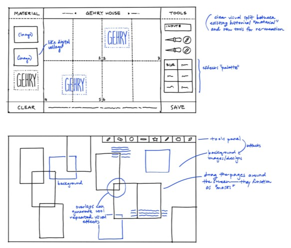

Zine Machine
Personal Project
Ongoing
Ongoing
UI/UX, Web Design/Development
Design Goal: To create an accessible and simple web-based tool for designing and printing 8-page folded zines.
The idea for this project came about when I was trying to design and print educational zines for my art history class.
I found that the process to go from Adobe Illustrator all the way to printing and cutting was unnecessarily cumbersome, requiring knowledge of color modes, bleed, swatches, etc.
Thus, I wanted to create an online tool that anyone could use to easily create and export their own physical printed matter.

Key Consideration: How can I keep the interface visually simple while still giving the user fine-grained tools?
erm add more content here lol